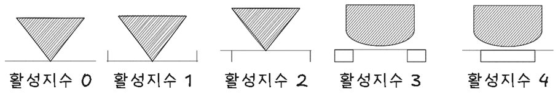

자재취급 및 운반관리
활성지수는 자재 운반에 필요한 수고 정도를 나타내는 지수로 높을수록 운반 효율성이 높다.
자재취급, 운반관리, 활성지수, 운반개선, 전용용기
활성지수

활성지수는 물류 관리에서 물건이 놓여 있는 상태로부터 이동에 들어가기까지의 수고의 정도를 나타내는 지수로, 일반적으로 0에서 4까지의 척도로 측정된다. 이 지수는 물건의 운반 효율성을 평가하는 데 사용되며, 활성지수가 높을수록 하역 작업의 효율이 높아진다
- 활성지수 0
-
- 바닥에 벌크 상태로 놓여 있을 때
- 활성지수 1
-
- 용기에 넣거나 다발로 묶었을 때
- 활성지수 2
-
- 팔레트, 스키트 등 받침을 사용했을 때
- 활성지수 3
-
- 차량을 사용했을 때
- 활성지수 4
-
- 컨베이어, 슈트 등을 사용했을 때
- 활성지수 활용
- 활성지수는 물류 활동의 효율성을 평가하고 개선하는 데 사용된다. 예를 들어, 물건이 컨베이어 위에 있는 경우(활성지수 4)에는 이동에 거의 노력이 필요하지 않기 때문에, 이러한 상태가 많을수록 물류센터의 운영이 효율적이라고 할 수 있다. 반대로, 물건이 마루에 그냥 놓여 있는 경우(활성지수 0)에는 많은 노력이 필요하기 때문에, 이러한 상태를 최소화하는 것이 중요하다
- 자재 취급 시스템과의 연관성
- 자재 취급 시스템은 물류 작업을 자동화하여 인적 오류를 줄이고, 비용을 절감하는 데 기여한다. 활성지수와 자재 취급 시스템은 물류의 효율성을 높이는 데 상호 보완적인 역할을 한다. 활성지수를 높이기 위해서는 물건을 쉽게 이동할 수 있는 상태로 유지하는 것이 중요하며, 이를 위해 자재 취급 시스템을 도입하여 물류 작업을 자동화하는 것이 효과적이다
운반개선 5가지 원칙
운반 개선의 5가지 원칙은 효율적이고 안전한 운반 작업을 위해 고려해야 할 중요한 요소이다.
직선 운반: 운반은 직선으로 할 것
이는 운반 거리를 최소화하고, 작업 효율성을 높이는 데 도움이 된다.연속 운반: 계속적으로 운반을 행할 것
이는 작업의 흐름을 유지하고, 중단 없이 일관된 생산성을 제공한다.생산 최적화: 생산을 최고로 하는 운반을 고려할 것
이는 운반 작업이 전체 생산 프로세스에 긍정적인 영향을 미치도록 설계하는 것을 의미한다.운반 작업 집중화: 운반 작업을 집중화할 것
이는 특정 작업자나 장비에 대한 부담을 줄이고, 작업의 효율성을 높이는 데 기여한다.수작업 최소화: 최대한 수작업을 없애는 운반 작업을 고려할 것
이는 기계화나 자동화를 통해 인력의 피로를 줄이고, 안전성을 높이는 데 목표를 두고 있다.
이러한 원칙들은 운반 작업의 효율성과 안전성을 동시에 높이는 데 중요한 역할을 한다.
전용 용기 설계
자재 출고에 필요한 전용 용기 설계 시 고려해야 할 원칙은 효율적인 물류와 안전한 운반을 위해 중요하다. 전용 용기는 자재의 보호와 최적화된 운송을 도와야 하므로, 설계 시 여러 가지 요소를 신중히 고려해야 한다.
- 자재 출고 전용 용기 설계 시 고려해야 할 원칙
-
- 적재 효율성: 용기는 가능한 한 많은 자재를 안전하고 효율적으로 적재할 수 있도록 설계해야 한다. 공간을 최대한 활용하는 구조로 설계하여 물류 비용을 절감할 수 있다.
- 안전성: 자재가 손상되지 않도록 보호하는 기능이 중요하다. 용기는 자재의 형태와 크기에 맞게 설계하여 이동 중의 충격이나 파손을 방지해야 한다. 또한 용기의 외부가 날카롭지 않도록 디자인해야 한다.
- 표준화: 용기의 크기와 형태는 표준화하여, 다양한 자재와 환경에서 사용될 수 있도록 해야 한다. 표준화된 용기는 관리와 운송이 용이하고, 다양한 시스템과 호환되기 때문에 효율성이 증가한다.
- 재질 선택: 자재의 성질에 맞는 재질을 선택해야 한다. 예를 들어, 부식에 강한 재료, 가벼운 재료, 또는 내구성이 높은 재료를 사용하는 것이 중요하다. 재질은 자재 보호뿐만 아니라 환경적인 요소도 고려하여 선택해야 한다.
- 추적 가능성: 용기는 바코드, RFID 태그 등을 부착할 수 있도록 설계하여 자재의 출고 및 이동 상황을 실시간으로 추적할 수 있어야 한다. 이를 통해 재고 관리와 물류 시스템을 최적화할 수 있다.
- 적합성: 용기는 자재의 특성에 맞게 설계해야 한다. 예를 들어, 액체나 기체, 민감한 전자 제품 등은 특별한 보호 장치가 필요하다. 자재의 특성에 맞는 형태와 보호 기능을 갖춘 용기가 필요하다.
- 경제성: 용기의 제작 및 운영 비용이 지나치게 높지 않도록 설계해야 한다. 경제적인 재료와 생산 방법을 선택하면서도 기능성을 충족하는 용기를 설계해야 한다.
- 다용도성: 다양한 자재에 활용할 수 있도록 다목적으로 사용할 수 있는 용기로 설계하는 것이 좋다. 여러 용도로 활용될 수 있으면 자원의 낭비를 줄일 수 있다.
전용 용기에 대한 장점과 단점은 다음과 같다.
| 장점 | 단점 |
|---|---|
| 자재 보호 기능이 향상되어 손상 위험이 줄어든다. | 특정 자재에 특화된 용기는 다른 자재에는 적합하지 않을 수 있다. |
| 물류 효율성이 높아져 적재 공간과 운송 비용을 절감할 수 있다. | 초기 설계 및 개발 비용이 상승할 수 있다. |
| 관리와 추적이 용이하여 재고 관리에 도움을 준다. | 재질이나 디자인 선택에서 신중함이 필요해 선택이 어려울 수 있다. |
| 표준화된 용기는 다양한 시스템과 호환되어 유연하게 운용할 수 있다. | 다용도성을 고려한 설계가 복잡해질 수 있다. |
전용 용기는 효율적인 물류와 안전한 운반에 도움을 준다. 설계 시 개발 비용이 상승할 수 있고 다용도성을 고려해야 하는 한계도 있다.